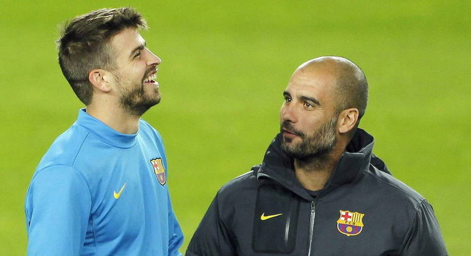

    </header>
    <section class="area-fofocas">
        <section class="fofocas"><!--Talvez precise criar uma class para trabalhar aqui-->
            
           <h1>Namorada de Piqué teria traído ex-jogador com Guardiola, diz jornal</h1>
           <h3>Ex-zagueiro e treinador trabalharam juntos no Barça; Clara Chía, atual companheira de Piqué, foi pivô da separação com Shakira</h3>
           
           
           <p>Nada como um dia após o outro. Segundo o jornal Sport, da Espanha, a namorada de Piqué, a modelo Clara Chía, teria traído o ex-jogador com ninguém menos que o treinador Pep Guardiola, que foi técnico do próprio Piqué durante anos no Barcelona. </p>
           <p>A "relação secreta" entre Guardiola e a modelo a começou a ser veiculada na imprensa espanhola nesta quinta-feira (6), e os rumores deste possível romance repercutiram na Catalunha. Vale lembrar que Piqué se separou de Shakira após trair a cantora com Clara Chía.</p>
           <p>Desde que o ex-jogador e a cantora colombiana se separaram, os dois tem trocado farpas com frequência. Na mais recente, Piqué deu uma entrevista a um podcast espanhol e falou sobre as músicas que a ex-mulher compôs nos últimos meses a respeito do relacionamento deles.</p>
           <p>De acordo com o catalão, ele sofre ataques nas redes desde o lançamento das canções e citou os impactos diretos em sua saúde mental.</p>              
           <p>“Não quero entrar [no assunto da saúde mental], porque é um tema pessoal. Mas não pensamos nas consequências que as coisas podem ter no nível mental”, disse o ex-jogador ao jornalista espanhol Gerard Romero.</p>
           
           <div id="video">
            <h3>Não sabe sobre a separação de Shakira e Piqué? Assista o vídeo e entenda tudo.</h3>
                <iframe width="560" height="315" src="https://www.youtube.com/embed/3ieUNUFzIc4" title="YouTube video player" frameborder="0" allow="accelerometer; autoplay; clipboard-write; encrypted-media; gyroscope; picture-in-picture; web-share" allowfullscreen></iframe>
            </div>
        </section>